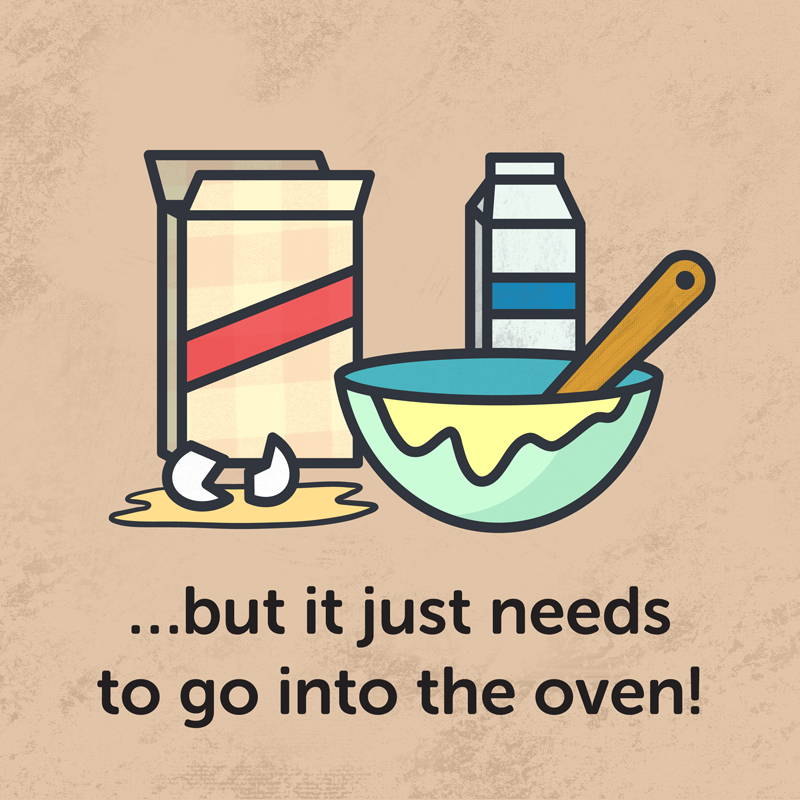
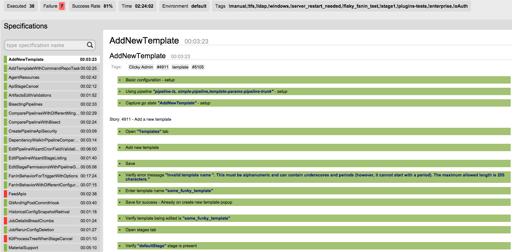

ThoughtWorks has been building products for 10 years. We’ve learned some hard lessons while trying to keep fairly large codebases malleable year after year.
This is the second part of a series of posts about Continuous Delivery infrastructure, culture, and process. In this post, we’ll present some of the more common feedback loops your organization should have in place to determine your readiness for Continuous Delivery.
This is the first part of a series of posts about Continuous Delivery infrastructure, culture, and process. In this first post, we'll present questions you need to answer honestly about your own people, teams, and organization to determine your readiness for Continuous Delivery.
I hear people say all the time that they're practicing continuous delivery. This declaration is often followed by something like, “I can let the security team know anytime”, or “I just have to run the performance tests”. If you can't push your software to production right now, you're not done with your continuous delivery journey.
At GoCD, we are open-sourcing our functional tests, we believe open-sourcing system tests will - improve quality through collaboration, make regression tests efficient, give the community a detailed picture of the system behavior and act as ...
This post contains information about a security patch available for GoCD 15.2. If you're using GoCD 15.2 in production, and especially if it is available over the internet, it is highly recommended to apply this patch immediately.